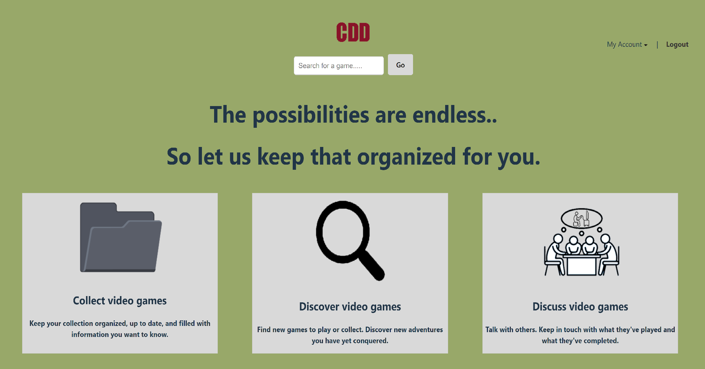
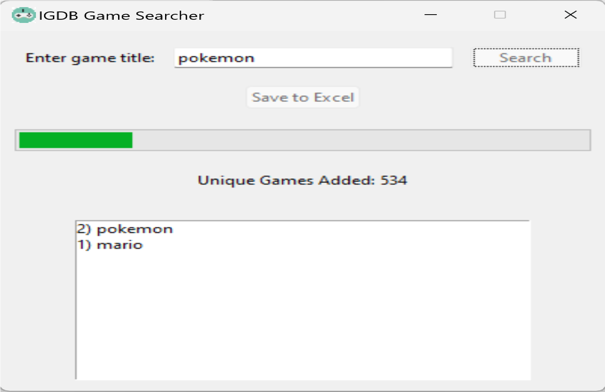

Project Overview
The Recipe Suggester is a Java-based terminal application that helps users find recipes based on their preferred main ingredient. It interacts with an external API to fetch recipes and provides details about ingredients, cooking instructions, and links to dish images. Users can also save their favorite recipes to a text file for later reference.
Key Features
- Ingredient-Based Search: Users can specify a main ingredient, and the application fetches relevant recipes using an API.
- Recipe Details: View ingredients, step-by-step cooking instructions, and a link to a picture of the dish.
- Save Recipes: Option to save recipe details to a text file for future use.
Technical Details
- Programming Language: Java for backend logic and API integration.
- API: Utilizes TheMealDB API to fetch recipe data.
- Data Handling: Parses JSON responses to extract recipe details for display and saving.
- File Management: Implements file handling to save recipes in a structured text format.
Challenges & Solutions
- API Integration: Handled inconsistencies in API responses with robust error handling and validation logic.
- User Interaction: Designed intuitive terminal prompts for seamless user experience.
- File Saving: Ensured saved recipes are well-formatted and easy to read by implementing structured output in text files.
Future Improvements
- Add a graphical user interface (GUI) for a more interactive experience.
- Implement advanced search options, such as filtering recipes by cuisine or dietary preferences.
- Enhance saved recipe management with features like editing or deleting entries.
Media


×

Key Takeaways
This project enhanced my skills in Java programming, API integration, and user interaction design through terminal applications. It demonstrates my ability to develop functional, user-centric applications with practical features like recipe saving.
GitHub Link
You can view the code for this project on my GitHub repository.